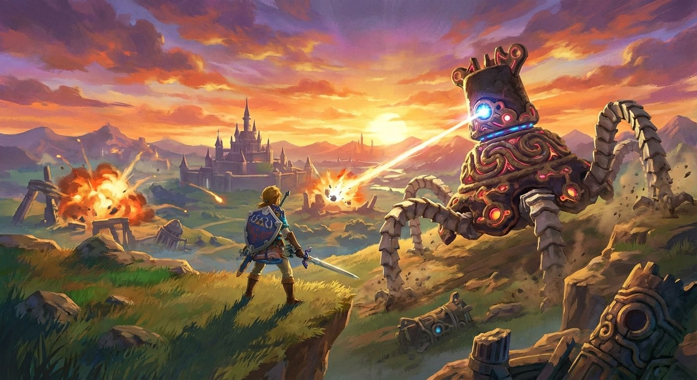
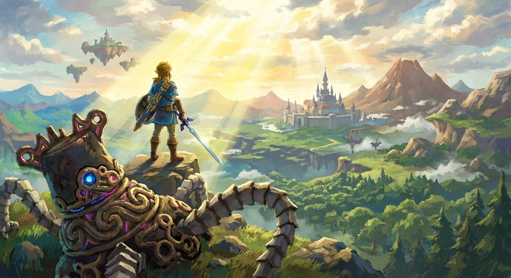

周五晚上九点半。
小林拖着脚走进家门，把包扔在沙发上，鞋都没换就瘫倒了。
这一周太长了。甲方改了四版方案，周三开会被老板点名，今天下午组里唯一会聊天的同事提了离职。
他盯着天花板发了五分钟呆，然后——
伸手摸到了茶几上的Switch。
🗡️ 塞尔达传说 · 王国之泪
开机画面亮起来的那一秒，肩膀上的东西好像一下子轻了。
· · ·

他操控着林克，来到海拉鲁大陆的北方高原。
远处，一个守护者正缓缓转过身——六条机械腿，一束红色激光。
说实话，他已经死在这个守护者手里七次了。每次都在最后一下血量见底。
"再来一次。"
不知道为什么，游戏里的"再来一次"比现实里容易说出口太多。
第八次。他观察了守护者的攻击规律，等它激光蓄力的空隙冲上去——
🎯 完美闪避 → 反击 → 暴击
守护者轰然倒地。
· · ·

站在山顶，日落的光铺满整个海拉鲁。
小林放下手柄，看着屏幕里的风景，突然想起一件事。
他已经想了三个月了——想剪一个短发。很短的那种。
但一直没去。理由很多：😰 万一不好看呢、😰 同事会不会说、😰 理发师理解不了我的意思怎么办。
他看了看屏幕里的林克，站在山顶，风吹着头发。
"守护者我都打了八次才过，一个头发算什么。"
他拿起手机，给楼下理发店老王发了条微信：
"王哥，明天有位吗？剪短一点。很短的那种。"
"有，来吧👍"
· · ·